说到日本冲绳我们多少都会感到熟悉，因为那里曾经是我国的琉球群岛，但是在二战后沦为了美军军事基地，并1972年正式归属日本。冲绳是日本最南部地区，由很多小岛组成，其中最大的岛屿就叫做冲绳岛，那霸市作为首府位于冲绳岛的中央。
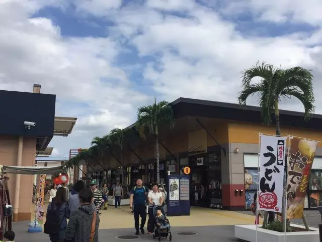
相比于繁华的东京，热闹的大阪和富有古韵的京都，冲绳显得更加平静与平淡。
这里也没有新干线，没有时尚的日本潮人，这里有的只是原生态和淳朴的琉球人。
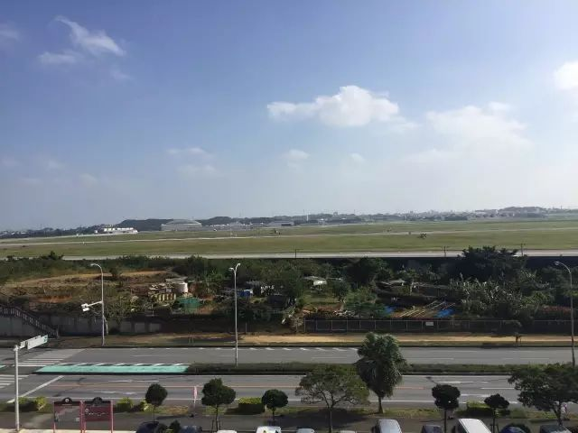
从北京首都国际机场出发，在3个多小时后，我们一行人抵达冲绳那霸机场，中国与冲绳有一个小时的时差。不出意料的是，那霸机场不大且简朴，更没有什么奢侈品门店，唯一的一间免税店也面积很小。
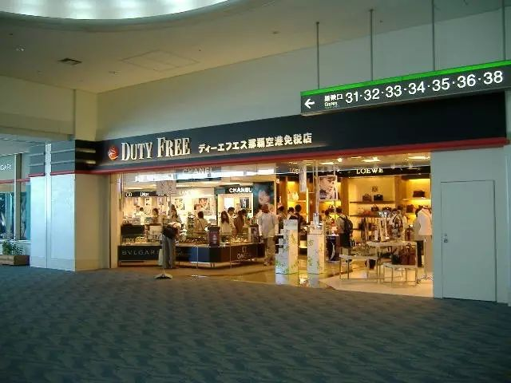
在冲绳参观商业区域的过程中，我们发现冲绳的物价与大阪几乎无异，当然比东京还是略低一些。冲绳虽然偏僻，但是因为属于旅游城市，物价水平并不低：餐饮这一块，随便吃一顿饭都要合人民币几百元，要是吃海鲜的话，那么肯定要上千了！
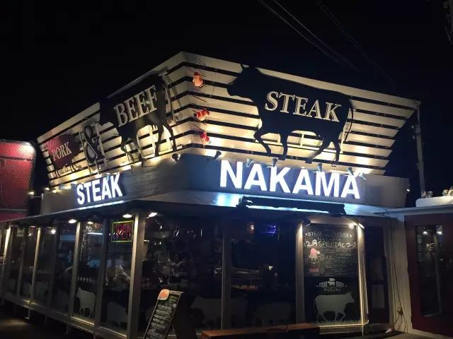 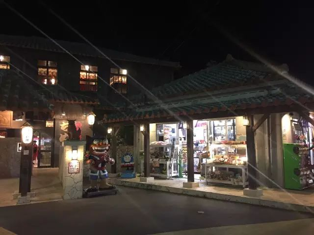 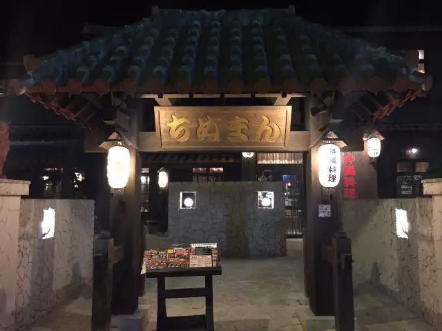
服装类更不便宜，如果MADE IN JAPAN的服装都要2千元左右，MADE IN CHINA的则会低些。
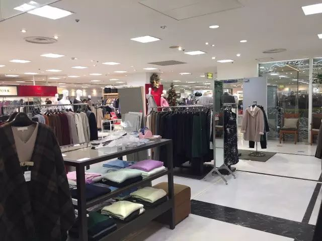 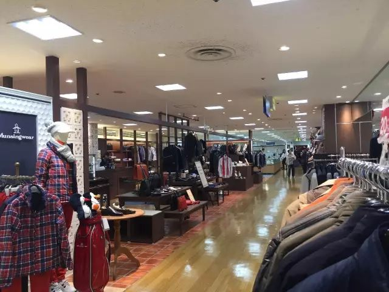
冲绳主要的大型商店和购物中心都在首府那霸，例如三越百货，三A百货，国际通，还有NAHA MAIN PLACE等大型商店都聚集在那个区域，还有冲绳DFS,OUTLETS，全都距离较近。
DFS就是免税商店，里边大牌云集，但是冲绳的DFS真的很小，而且品牌不是很全。一趟线下来，先是化妆品，然后手表，手表很少的几个牌子，然后是一些品牌店，没记错的话，最后一家是Gucci，就到终点了，在这里逛上一个小时就完全足够了。
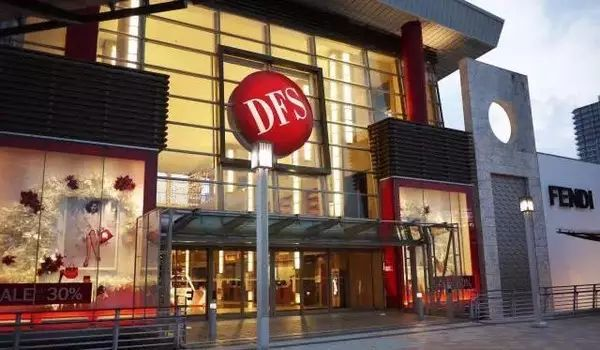 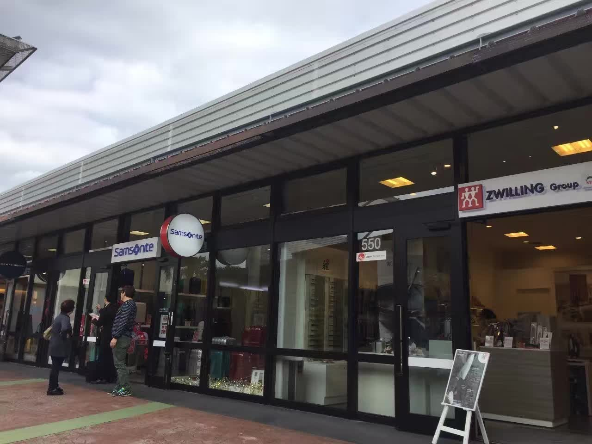 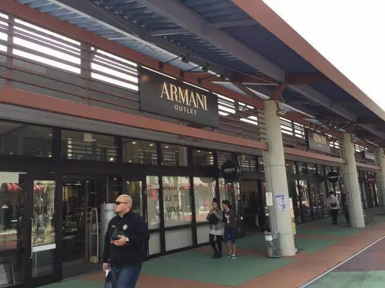
冲绳的奥特莱斯离那霸市区很近，说是Outlets，但是很多品牌的价格并不比原价便宜多少。但是如果来这儿选购运动品牌很容易捡到便宜，如果恰好是一款断码的那简直是便宜得不得不拿下。
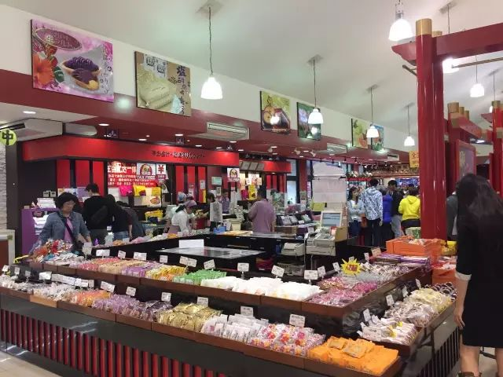 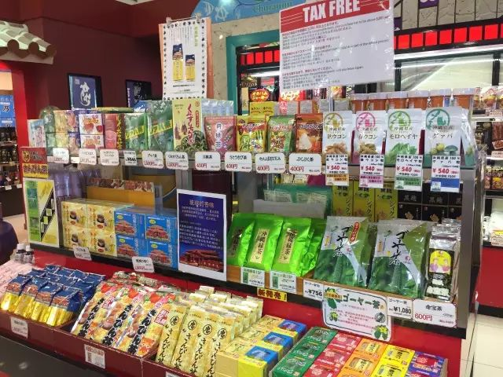 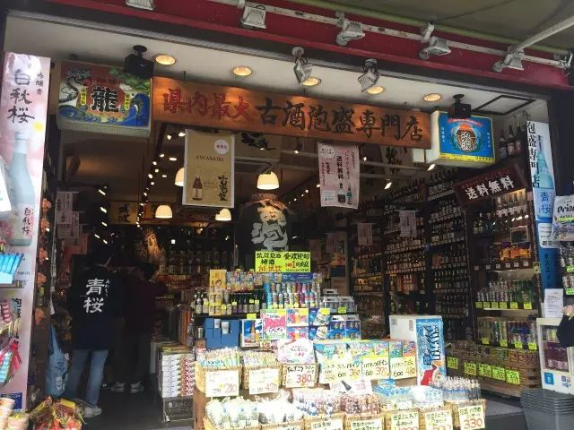
国际通是冲绳非常有名的一条街道，全长1.6公里。所有的店铺在这里云集，国际通主要卖一些冲绳的土特产品和无数让人流连忘返的药妆店。
尽管冲绳之行只有短短几天
我们却几乎走遍了冲绳有名的街巷与商业区
见到了无数质朴的店主，也拜访了百货中心的许多领导
冲绳的商业模式与东京相似但规模又小了很多
很中国商场略有不同但是在诸多方面值得我们学习
让我们期待在不久的将来第二次冲绳商业之行